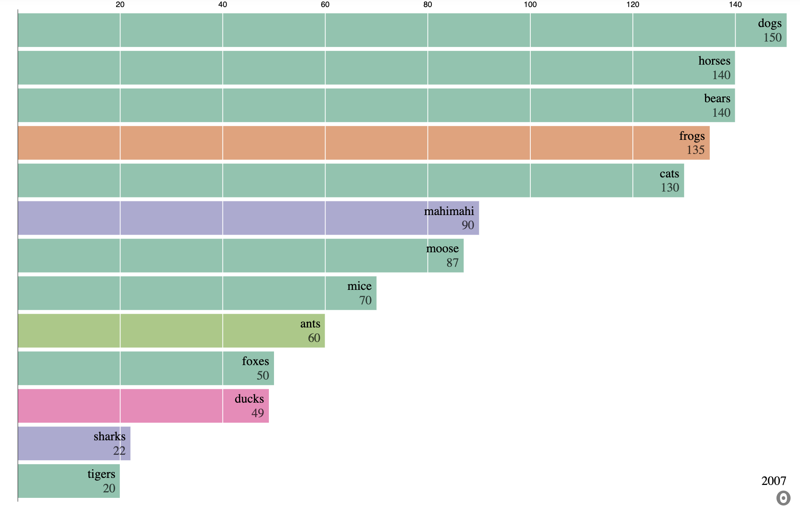
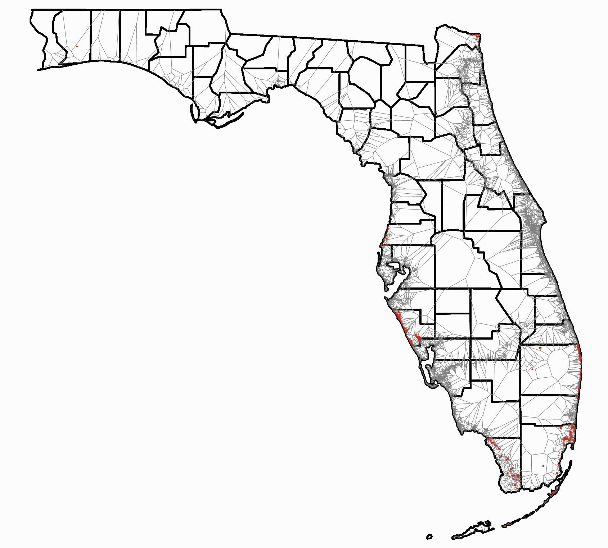

Visualization Library
Here you will find a wide variety of pre-configured visualizations that show the scope of what Observable-Jupyter can offer.
Animations
Animated Visualizations are a great way to visualize data while also catching the atention of an audience.

Interactive
Interactivity in visualizations is one of the stand out features Observable and Observable-Jupyter have to offer.

Maps
Maps are made easy with observable
Analysis
Your standard Analysis tools such as bar charts, scatter plots, histograms and more.